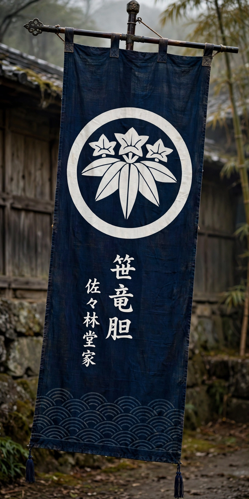

| Minamoto clan (源氏) | |
|---|---|
 | |
| Home province | Various |
| Parent house | Imperial House of Japan |
| Founder | Minamoto no Makoto (first of the name) |
| Founding year | 9th century |
| Notable members | Minamoto no Yoritomo; Minamoto no Yoshitsune; Seiwa Genji line |
The Minamoto clan (Japanese: 源氏, Minamoto-shi or Genji) was one of the most powerful and important clans of Japanese history. Members of the imperial family who were removed from the line of succession were granted the surname Minamoto, first by Emperor Saga in the early 9th century. Of its twenty-one branches, the most successful was the Seiwa Genji, descended from Emperor Seiwa.
Over generations the Minamoto became provincial warrior families. Minamoto no Yoriyoshi and his son Minamoto no Yoshiie fought in the Former Nine Years' War (1051–1062) in the north. In the Hōgen (1156) and Heiji (1160) rebellions the Minamoto clashed with the rival Taira clan; after 1160 the Taira under Taira no Kiyomori dominated the court and many Minamoto were killed or exiled.
In 1180 Minamoto no Yoritomo raised an army in the east, beginning the Genpei War (1180–1185). With his half-brother Minamoto no Yoshitsune winning celebrated victories at Ichi-no-Tani, Yashima, and finally Dan-no-ura, the Taira were destroyed. Yoritomo established his government at Kamakura and in 1192 received the title sei-i taishōgun, founding the Kamakura shogunate — the first of Japan's military governments. Later shogunal houses, including the Ashikaga and Tokugawa, claimed Minamoto descent.
The name became essential to a shogun's legitimacy: in practice, only a Minamoto could be appointed shōgun. Tales of Yoshitsune and the Genpei War, retold in The Tale of the Heike, made the clan central to Japanese literary and popular culture.
See also: Taira clan; Genpei War; Kamakura shogunate; Minamoto no Yoritomo; Minamoto no Yoshitsune.